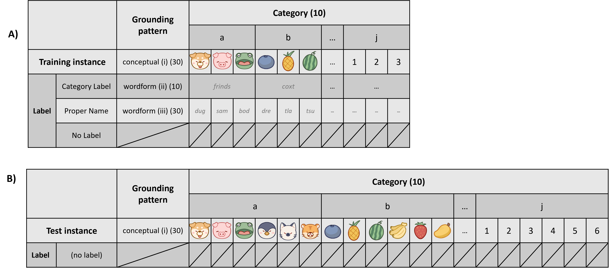

The current work applied neurocomputation to evaluate neuronal differences in the conceptual representations of objects when they were paired with proper names and category labels. The goal was to unfold the differential neural and cognitive basis of proper names and category labels during semantic learning and concept formation. Additionally, the current work assessed the generalization performance of this deep neural network model by comparing the extent to which novel instances could activate the neural network in the same manner as the training instances of their category did. We used the brain-constrained deep neural network model with spiking neurons and twelve areas in the left-hemispheric language-dominant fronto-temporo-occipital regions described in previous studies by Tomasello et al. (2018) and Henningsen-Schomers & Pulvermüller (2021).
The architecture modelled three areas representing the ventral visual system (i.e., primary visual cortex *V1, temporo-occipital area *TO, anterior-temporal area *AT) and three areas representing the dorsolateral action system (i.e. , dorsolateral fronto-central motor *M1L, premotor cortex *PML, prefrontal cortex *PFL). These formed the extrasylvian region for sensorimotor processing where semantic information was stored. Another 6 areas of the perisylvian region for word-form processing which housed articulatory-phonological and acoustic-phonological information. These areas involved the three auditory areas (i.e., primary auditory cortex *A1, auditory belt *AB, parabelt areas *PB) and three articulatory areas (i.e., inferior primary motor cortex *M1i, inferior premotor cortex *PMi, multimodal prefrontal motor cortex *PFi), respectively. Between-area connections were established in a way that prefer adjacent neighbors although linkages to next-neighbor areas were also available. In this structure, long-distance corticocortical links were replicated according to neuroanatomical evidence in the literature.
Figure. Anatomical and connectivity architecture of the deep neural network model. Image taken from Henningsen-Schomers & Pulvermüller (2021).
Training phase. The neural network model was trained on ten categories, each containing three training instances. The training instances of the same category were labelled either by the same category label, by their distinct proper names or they were not labelled at all. Grounding patterns of each instance were presented to extrasylvian primary areas (to mimic visuo-motoric percepts) and perisylvian areas (to mimic linguistic labels embedded in auditory/articulatory signals).
Test phase. For each of the ten categories we presented to the neural network three training instances together with three novel instances. Training and test instances were presented to the neural network separately and after one another in a predetermined order. Importantly, we only stimulated the extrasylvian primary areas *V1 and *M1L. The absence of labels in the test trial allowed us to evaluate how different labels would influence the deep neural network’s concept learning. This could be reflected in different activation patterns in the multimodal areas during the test phase.
Note: the test order in the current study was not relevant because we had reset the global network (i.e., all excitatory and inhibitory cells displayed a membrane potential of zero) each time before the grounding pattern was inputted to the neural network model.

Figure. (A) TRAINING: The neural network model was trained on 10 categories, each containing 3 training instances. The training instances of the same category were labelled either by the same category label or by their distinct proper names. (B) TEST: For each of the 10 categories we presented to the neural network 3 training instances together with 3 novel instances.